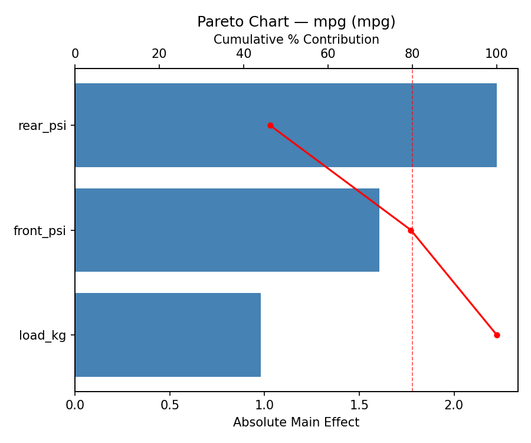
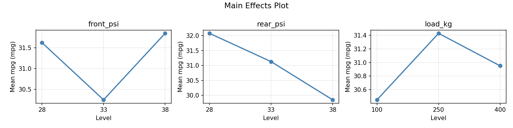
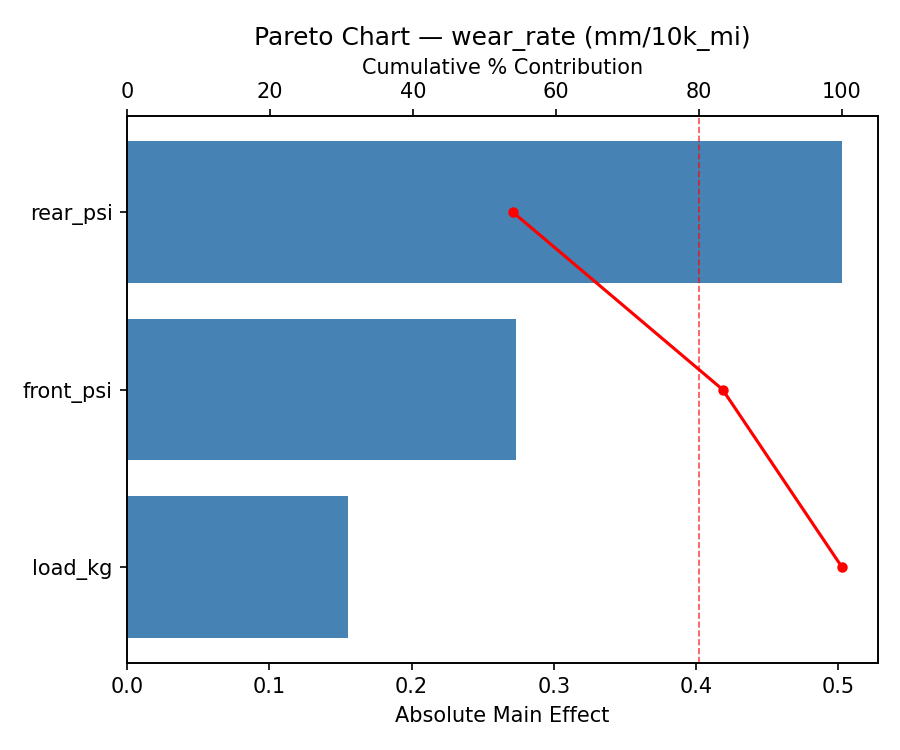
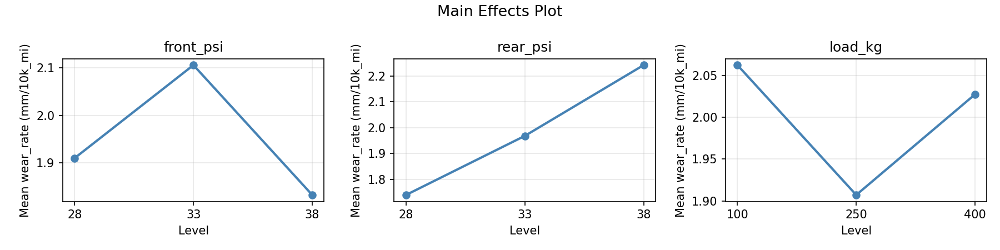
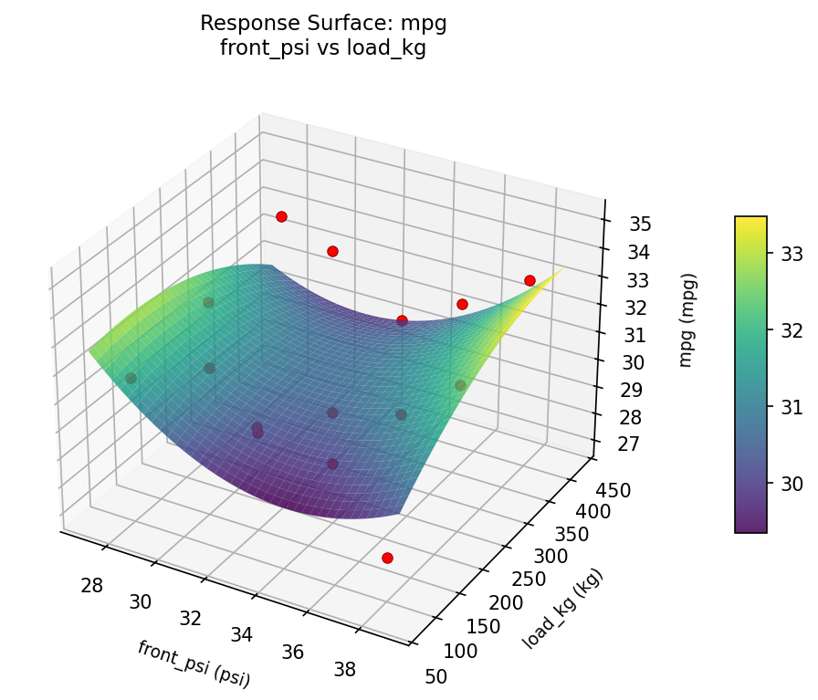
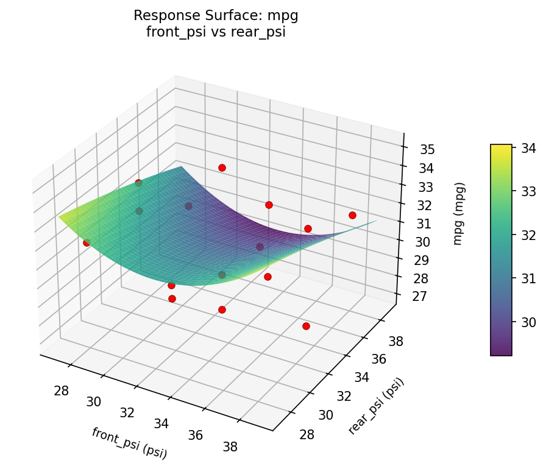
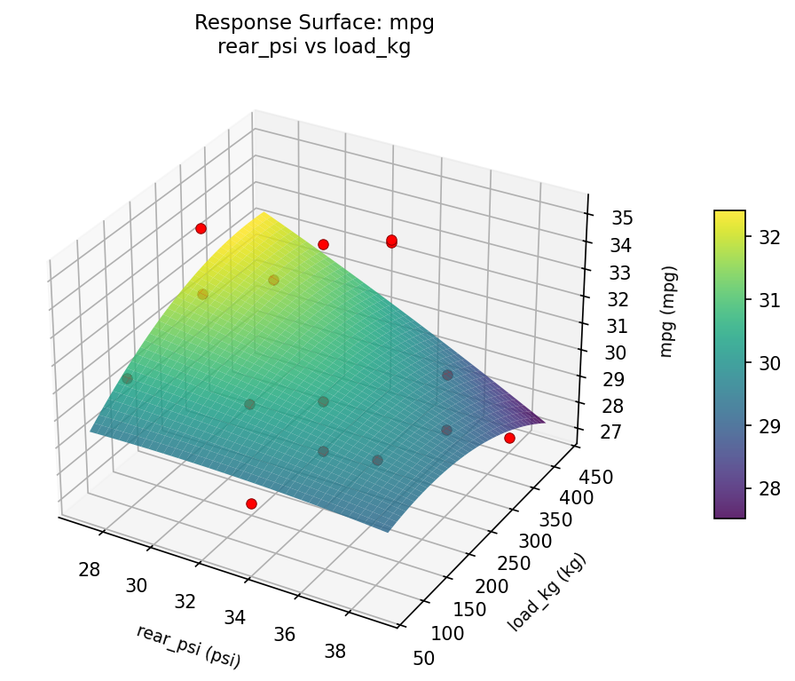
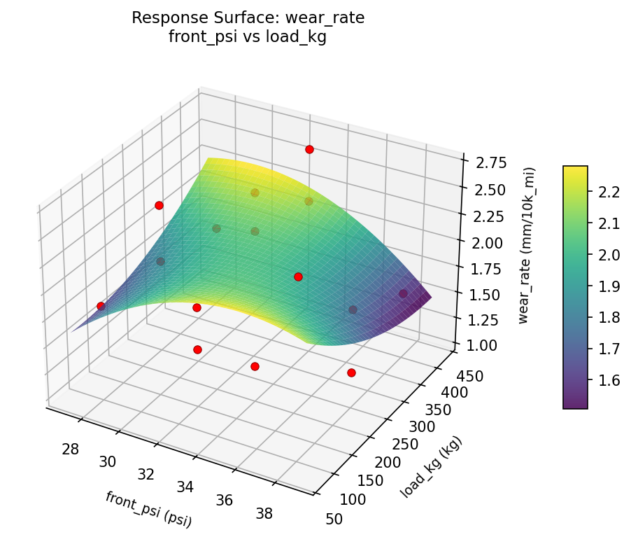
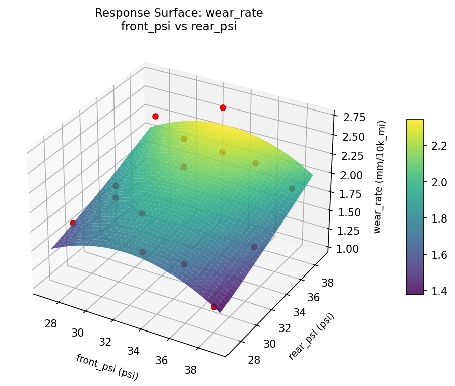
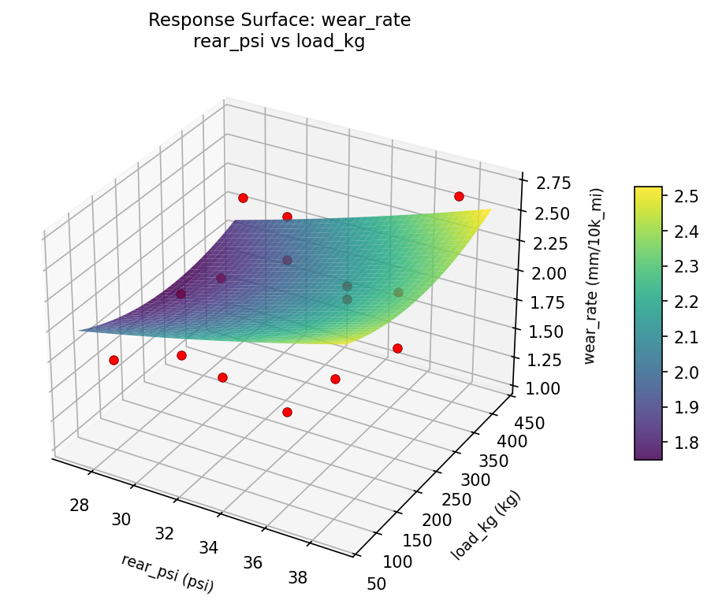

Summary
This experiment investigates tire pressure & fuel economy. Box-Behnken design to maximize fuel economy and minimize tire wear by tuning front pressure, rear pressure, and load weight.
The design varies 3 factors: front psi (psi), ranging from 28 to 38, rear psi (psi), ranging from 28 to 38, and load kg (kg), ranging from 100 to 400. The goal is to optimize 2 responses: mpg (mpg) (maximize) and wear rate (mm/10k_mi) (minimize). Fixed conditions held constant across all runs include vehicle = sedan, tire model = all_season.
A Box-Behnken design was chosen because it efficiently fits quadratic models with 3 continuous factors while avoiding extreme corner combinations — requiring only 15 runs instead of the 8 needed for a full factorial at two levels.
Quadratic response surface models were fitted to capture potential curvature and factor interactions. The RSM contour plots below visualize how pairs of factors jointly affect each response.
Key Findings
For mpg, the most influential factors were rear psi (46.3%), front psi (33.4%), load kg (20.3%). The best observed value was 35.1 (at front psi = 38, rear psi = 38, load kg = 250).
For wear rate, the most influential factors were rear psi (54.0%), front psi (29.3%), load kg (16.7%). The best observed value was 1.05 (at front psi = 38, rear psi = 38, load kg = 250).
Recommended Next Steps
- Run confirmation experiments at the predicted optimal settings to validate the model.
- Consider whether any fixed factors should be varied in a future study.
Experimental Setup
Factors
| Factor | Low | High | Unit |
|---|
front_psi | 28 | 38 | psi |
rear_psi | 28 | 38 | psi |
load_kg | 100 | 400 | kg |
Fixed: vehicle = sedan, tire_model = all_season
Responses
| Response | Direction | Unit |
|---|
mpg | ↑ maximize | mpg |
wear_rate | ↓ minimize | mm/10k_mi |
Configuration
{
"metadata": {
"name": "Tire Pressure & Fuel Economy",
"description": "Box-Behnken design to maximize fuel economy and minimize tire wear by tuning front pressure, rear pressure, and load weight"
},
"factors": [
{
"name": "front_psi",
"levels": [
"28",
"38"
],
"type": "continuous",
"unit": "psi"
},
{
"name": "rear_psi",
"levels": [
"28",
"38"
],
"type": "continuous",
"unit": "psi"
},
{
"name": "load_kg",
"levels": [
"100",
"400"
],
"type": "continuous",
"unit": "kg"
}
],
"fixed_factors": {
"vehicle": "sedan",
"tire_model": "all_season"
},
"responses": [
{
"name": "mpg",
"optimize": "maximize",
"unit": "mpg"
},
{
"name": "wear_rate",
"optimize": "minimize",
"unit": "mm/10k_mi"
}
],
"settings": {
"operation": "box_behnken",
"test_script": "use_cases/117_tire_pressure_fuel/sim.sh"
}
}
Experimental Matrix
The Box-Behnken Design produces 15 runs. Each row is one experiment with specific factor settings.
| Run | front_psi | rear_psi | load_kg |
|---|
| 1 | 33 | 28 | 100 |
| 2 | 33 | 33 | 250 |
| 3 | 38 | 33 | 400 |
| 4 | 38 | 33 | 100 |
| 5 | 33 | 33 | 250 |
| 6 | 33 | 33 | 250 |
| 7 | 28 | 33 | 400 |
| 8 | 38 | 28 | 250 |
| 9 | 33 | 28 | 400 |
| 10 | 38 | 38 | 250 |
| 11 | 28 | 33 | 100 |
| 12 | 33 | 38 | 400 |
| 13 | 28 | 28 | 250 |
| 14 | 28 | 38 | 250 |
| 15 | 33 | 38 | 100 |
Step-by-Step Workflow
1
Preview the design
$ python doe.py info --config use_cases/117_tire_pressure_fuel/config.json
2
Generate the runner script
$ python doe.py generate --config use_cases/117_tire_pressure_fuel/config.json \
--output use_cases/117_tire_pressure_fuel/results/run.sh --seed 42
3
Execute the experiments
$ bash use_cases/117_tire_pressure_fuel/results/run.sh
4
Analyze results
$ python doe.py analyze --config use_cases/117_tire_pressure_fuel/config.json
5
Get optimization recommendations
$ python doe.py optimize --config use_cases/117_tire_pressure_fuel/config.json
6
Generate the HTML report
$ python doe.py report --config use_cases/117_tire_pressure_fuel/config.json \
--output use_cases/117_tire_pressure_fuel/results/report.html
Real-World Experiment Workflow
ℹ
Physical Vehicle Test? Use the Manual Workflow
Automotive experiments require real driving conditions, fuel consumption measurement, and physical equipment adjustments. The simulation script above is for demonstration. For your real experiments, use record, status, and export-worksheet.
$ python doe.py export-worksheet --config use_cases/117_tire_pressure_fuel/config.json \
--format csv --output worksheet.csv
$ python doe.py status --config use_cases/117_tire_pressure_fuel/config.json
$ python doe.py record --config use_cases/117_tire_pressure_fuel/config.json --run 1
$ python doe.py analyze --config use_cases/117_tire_pressure_fuel/config.json --partial
$ python doe.py analyze --config use_cases/117_tire_pressure_fuel/config.json
$ python doe.py optimize --config use_cases/117_tire_pressure_fuel/config.json
$ python doe.py report --config use_cases/117_tire_pressure_fuel/config.json \
--output report.html
✔
Works Without a Test Script
The analysis pipeline doesn't care how results were produced. Record your measurements with record, and the full analysis, optimization, and reporting pipeline works identically. Use --partial to get early insights before all runs are complete.
Features Exercised
| Feature | Value |
|---|
| Design type | box_behnken |
| Factor types | continuous (all 3) |
| Arg style | double-dash |
| Responses | 2 (mpg ↑, wear_rate ↓) |
| Total runs | 15 |
Analysis Results
Generated from actual experiment runs using the DOE Helper Tool.
Response: mpg
Top factors: rear_psi (46.3%), front_psi (33.4%), load_kg (20.3%).
Pareto Chart

Main Effects Plot

Response: wear_rate
Top factors: rear_psi (54.0%), front_psi (29.3%), load_kg (16.7%).
Pareto Chart

Main Effects Plot

Response Surface Plots
3D surfaces fitted with quadratic RSM. Red dots are observed data points.
mpg front psi vs load kg

mpg front psi vs rear psi

mpg rear psi vs load kg

wear rate front psi vs load kg

wear rate front psi vs rear psi

wear rate rear psi vs load kg

Full Analysis Output
RSM surface: rsm_mpg_front_psi_vs_rear_psi.png
RSM surface: rsm_mpg_front_psi_vs_load_kg.png
RSM surface: rsm_mpg_rear_psi_vs_load_kg.png
RSM surface: rsm_wear_rate_front_psi_vs_rear_psi.png
RSM surface: rsm_wear_rate_front_psi_vs_load_kg.png
RSM surface: rsm_wear_rate_rear_psi_vs_load_kg.png
=== Main Effects: mpg ===
Factor Effect Std Error % Contribution
--------------------------------------------------------------
rear_psi 2.2250 0.6254 46.3%
front_psi 1.6071 0.6254 33.4%
load_kg 0.9786 0.6254 20.3%
=== Summary Statistics: mpg ===
front_psi:
Level N Mean Std Min Max
------------------------------------------------------------
28 4 31.6250 1.4268 29.7000 33.1000
33 7 30.2429 2.7048 27.0000 35.1000
38 4 31.8500 2.8101 28.0000 34.5000
rear_psi:
Level N Mean Std Min Max
------------------------------------------------------------
28 4 32.0750 1.7443 30.5000 34.5000
33 7 31.1286 2.8900 27.5000 35.1000
38 4 29.8500 2.0728 27.0000 31.7000
load_kg:
Level N Mean Std Min Max
------------------------------------------------------------
100 4 30.4500 1.6523 28.0000 31.6000
250 7 31.4286 2.7681 27.5000 35.1000
400 4 30.9500 2.9149 27.0000 33.2000
=== Main Effects: wear_rate ===
Factor Effect Std Error % Contribution
--------------------------------------------------------------
rear_psi 0.5025 0.1292 54.0%
front_psi 0.2732 0.1292 29.3%
load_kg 0.1554 0.1292 16.7%
=== Summary Statistics: wear_rate ===
front_psi:
Level N Mean Std Min Max
------------------------------------------------------------
28 4 1.9100 0.2874 1.6800 2.3300
33 7 2.1057 0.5792 1.0500 2.6900
38 4 1.8325 0.5854 1.2700 2.6300
rear_psi:
Level N Mean Std Min Max
------------------------------------------------------------
28 4 1.7400 0.3780 1.2700 2.1900
33 7 1.9686 0.6068 1.0500 2.6900
38 4 2.2425 0.3469 1.8700 2.6800
load_kg:
Level N Mean Std Min Max
------------------------------------------------------------
100 4 2.0625 0.4116 1.7000 2.6300
250 7 1.9071 0.5962 1.0500 2.6900
400 4 2.0275 0.5136 1.5600 2.6800
Pareto chart (mpg): use_cases/117_tire_pressure_fuel/results/analysis/pareto_mpg.png
Pareto chart (wear_rate): use_cases/117_tire_pressure_fuel/results/analysis/pareto_wear_rate.png
Main effects (mpg): use_cases/117_tire_pressure_fuel/results/analysis/main_effects_mpg.png
Main effects (wear_rate): use_cases/117_tire_pressure_fuel/results/analysis/main_effects_wear_rate.png
Optimization Recommendations
=== Optimization: mpg ===
Direction: maximize
Best observed run: #4
front_psi = 38
rear_psi = 38
load_kg = 250
Value: 35.1
RSM Model (linear, R² = 0.3042, Adj R² = 0.1145):
Coefficients:
intercept +31.0400
front_psi +1.0125
rear_psi +0.6875
load_kg +1.2750
RSM Model (quadratic, R² = 0.7301, Adj R² = 0.2441):
Coefficients:
intercept +31.8000
front_psi +1.0125
rear_psi +0.6875
load_kg +1.2750
front_psi*rear_psi +0.1000
front_psi*load_kg +0.0250
rear_psi*load_kg -0.7250
front_psi^2 +1.3000
rear_psi^2 -0.1500
load_kg^2 -2.5750
Curvature analysis:
load_kg coef=-2.5750 concave (has a maximum)
front_psi coef=+1.3000 convex (has a minimum)
rear_psi coef=-0.1500 concave (has a maximum)
Notable interactions:
rear_psi*load_kg coef=-0.7250 (antagonistic)
Predicted optimum (from quadratic model):
front_psi = 38
rear_psi = 38
load_kg = 250
Predicted value: 34.7500
Model quality: Good fit — general trends are captured, some noise remains.
Factor importance:
1. load_kg (effect: 3.9, contribution: 50.3%)
2. front_psi (effect: 2.5, contribution: 32.1%)
3. rear_psi (effect: 1.4, contribution: 17.6%)
=== Optimization: wear_rate ===
Direction: minimize
Best observed run: #4
front_psi = 38
rear_psi = 38
load_kg = 250
Value: 1.05
RSM Model (linear, R² = 0.2843, Adj R² = 0.0891):
Coefficients:
intercept +1.9807
front_psi -0.2588
rear_psi -0.1163
load_kg -0.2100
RSM Model (quadratic, R² = 0.7508, Adj R² = 0.3021):
Coefficients:
intercept +1.8733
front_psi -0.2587
rear_psi -0.1162
load_kg -0.2100
front_psi*rear_psi +0.0425
front_psi*load_kg +0.0350
rear_psi*load_kg +0.1300
front_psi^2 -0.3004
rear_psi^2 -0.0454
load_kg^2 +0.5471
Curvature analysis:
load_kg coef=+0.5471 convex (has a minimum)
front_psi coef=-0.3004 concave (has a maximum)
rear_psi coef=-0.0454 negligible curvature
Predicted optimum (from quadratic model):
front_psi = 33
rear_psi = 28
load_kg = 100
Predicted value: 2.8312
Model quality: Good fit — general trends are captured, some noise remains.
Factor importance:
1. load_kg (effect: 0.8, contribution: 48.6%)
2. front_psi (effect: 0.6, contribution: 37.0%)
3. rear_psi (effect: 0.2, contribution: 14.4%)